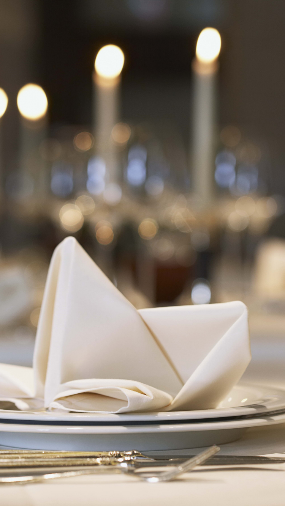

<ion-header>
  <ion-toolbar color=tertiary>

    <ion-title>
      Favoris
    </ion-title>

  </ion-toolbar>
</ion-header>


<ion-content>

  <ion-refresher (ionRefresh)="doRefresh($event)">
    <ion-refresher-content pullingIcon="arrow-dropdown" refreshingSpinner="circles" refreshingText="Chargement...">
    </ion-refresher-content>
  </ion-refresher>

  <ion-list>
    <button ion-item *ngFor="let f of favorites.records" (click)="itemTapped($event, f)" padding>
      <ion-thumbnail item-start>
        
      </ion-thumbnail>
      <!-- <ion-thumbnail item-start>
        <ion-icon name="image" style='color: #aaa6a6d3; font-size: 50px'></ion-icon>
      </ion-thumbnail> -->

      <p>
        <span class="note">5.5</span>
      </p>
      <!--{{f.note}}-->
      <p>
        <span class="nom-enseigne">{{f.nom}}</span>
      </p>
      <p>
        <span class="description">{{f.description}}</span>
      </p>
      <ion-icon name="chatbubbles" color=tertiary margin-top></ion-icon>
      <span class="commentaire">3</span>
      <!--{{deal.comments.length}}-->
      <a (click)="itemTapped($event, f)">
        <span class="manger">Allons manger...</span>
      </a>
    </button>
  </ion-list>

</ion-content>
